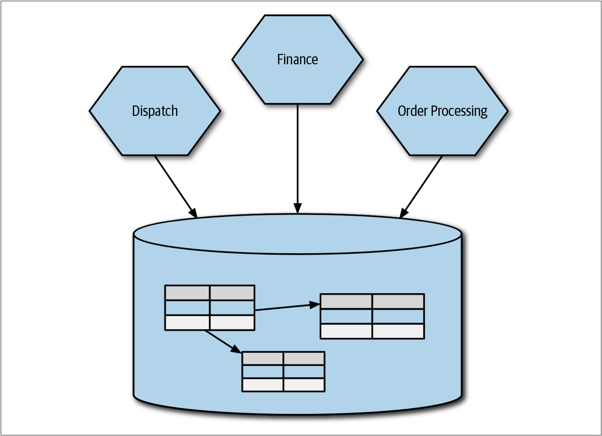
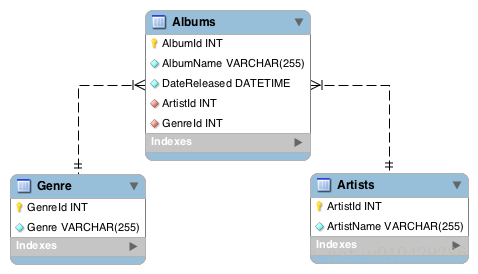

正如我们已经探索的那样，有很多方法可以将功能提取到微服务中。但是，我们需要解决一个显而易见但又没有人愿意讨论的问题：即，我们如何处理数据？微服务对于信息隐藏而言是最有效的，这也促使我们朝着在微服务中完全封装其自身的数据存储和检索机制的方向发展。这导致我们得出这样的结论：在向微服务架构迁移时，如果我们希望从迁移中获得最大收益，则需要拆分单体数据库。
但是，拆分数据库并不是一件容易的事。我们需要考虑拆分期间的数据同步，逻辑模式与物理模式分解，事务完整性，joins，延迟等问题。在本章中，我们将着眼于这些问题，并探索可以帮助我们解决这些问题的模型。
但是，在开始拆分之前，我们应该研究管理单个共享数据库所面临的挑战和应对模式。
共享数据库
正如我们在第1章中讨论的那样，我们可以从领域耦合，时间耦合或实现耦合的角度来思考耦合。因为人们普遍在多个schema之间共享数据库。因此，在三种耦合中，对于数据库而言，我们最常用的就是实现耦合，如图4-1所示。

图4-1. 多个服务都直接访问同一个数据库
从表面上看，会有很多问题涉及到在多个服务之间共享单个数据库。但是，主要的问题是，我们拒绝了自己决定共享什么和隐藏什么的机会，而这与我们对信息隐藏的渴望背道而驰。这意味着很难了解可以安全修改schema的哪些部分。知道外部可以访问数据库是一回事，但是不知道他们使用模式的哪一部分是另一回事。可以使用视图来缓解这种情况，我们将在稍后对此进行讨论，但这并不是一个完整的解决方案。
schema
在数据库中，schema是数据库的组织和结构，schema中包含了schema对象，可以是表(table)、列(column)、数据类型(data type)、视图(view)、存储过程(stored procedures)、关系(relationships)、主键(primary key)、外键(foreign key)等。数据库schema可以用一个可视化的图来表示，它显示了数据库对象及其相互之间的关系，如下图所示：

以上是模式图的一个简单例子，显示了三个表及其数据类型、表之间的关系以及主键和外键。
schema和database是否等同呢？是否一致，取决于数据库供应商：
- MySQL的文档中指出，在物理上，模式与数据库是同义的，所以，模式和数据库是一回事。
- 但是，Oracle的文档却指出，某些对象可以存储在数据库中，但不能存储在schema中。因此，模式和数据库不是一回事。
- 而对于SQL Server，根据SQLServer technical article，schema是数据库SQL Server内部的一个独立的实体。所以，他们也不是一回事。
schema这个词可以用在很多不同的环境中，在特定数据库管理系统创建一个schema时，您需要使用DBMS特定定义模式，当你切换到一个新的数据库管理系统时，一定要查看该系统是如何定义schema的。